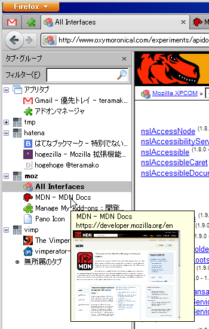
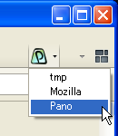
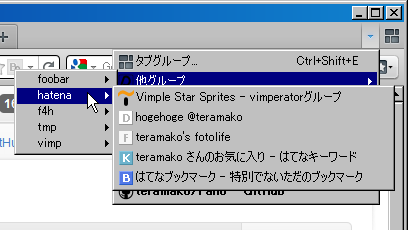
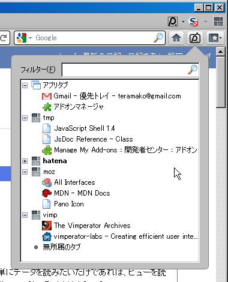

Pano
Show the tabgroups list. No more needs open Panorama view :-P
Feature
- list tabgroups on the sidebar
- Pano button toggles open/close the sidebar and groups menu list for switching
- add the other groups and it's tabs in all-tabs-button's menu
- Pano panel (like the sidebar)
The sidebar

Shows all tabs list by grouping. The first group is AppTabs (Pinned tabs) list, the next... are normal tabgroups, and the last is orphaned tabs group.
Opening the sidebar
- "Menubar" -> "View" -> "Sidebar" -> "Tab Group"
- KeyNavigation: Ctrl + Alt + p or Command + Option + p(on Mac OS X)
- Pano button(see below)
Double click:
- a tab item: switch to the tab (also do by ENTER)
- a group item: be into editing the group name (also do by F2)
Drag & Drop
Can Drag & Drop multi tab items.
Filtering
List up only matches the title or the URL.
*- wild card
|- OR condition
Caution: On filtering, Drag & Drop is not available :(
Context menu
- Create a new tabgroup
- Close the tabgroup (only on a group item)
- Close the tab (only on a tab item)
- Close the sidebar
Pano button

Pano button is in Cusutomize Toolbar by default. Needs drag and drop the button to a toolbar if you want use.
Pano button has 2 features.
- it's button toggle open/close the sidebar.
- it's menu has tabgroups menu for switching to the tabgroup.
- the selected tab will be the last selected tab in the tabgroup.
All tabs list

Add "The other groups" menu (sorry the capture [IMG-3] is on Japanese locale "他グループ") to all-tabs-list button. The menu has tabgroups (without the current group) menu, and has tabs menu in the tabgroup menu for switching.
Caution:
when set browser.allTabs.previews to true in Preferences(about:config),
this feature will not be available.
Pano panel

On click the button or Alt + p, popups the panel like the sidebar. And the usage is also same as the sidebar.
The button is in 'Cusutomize Toolbar' same as Pano button.
Report bugs or request
Please report to GitHub Issues if you find bugs or have ideas.
License
Thease code are licensed under a disjunctive tri-license giving you the choice of one of the three following sets of free software/open source licensing terms.
Full version, see license.txt.